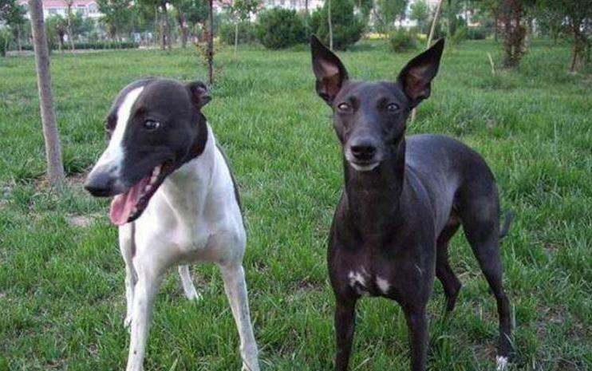

狗狗的成长一般分为幼年、青年、中年和老年四个阶段，而且不同时间段它们的身体状况以及需要的营养也不一样，那么在它们的这些阶段我们要怎样饲养它们呢?

1. 幼年阶段
在狗狗还小的时候，它们的肠胃功能发育还不完全，因此在这段时间内，宠主需要帮狗狗准备一些易消化易吸收的食物，可以给狗狗多喂食一些蛋白质含量比较高的食物，保证它们身体的健康成长;
2. 青年时期
当狗狗稍大一些的时候，它所需要的营养也就更多了，因此这个时候宠主就需要注意狗狗的食物搭配了，在保证狗狗每餐吃饱的情况下，还应保证食物的均衡营养。在这个时间段内宠主在保证狗狗身体蛋白质摄入的同时，也要保证食物的维生素的含量;
3. 中年时期
中年时期的狗狗的身体的各项机能都开始退化了，因此宠主在保证食物营养的同时，还需要帮狗狗补钙。有的狗狗由于身体的钙含量的缺少在老了之后容易患骨质疏松和关节炎，因此宠主也需要多加注意;
4. 老年时期
到了老年时期狗狗的视力、听力以及器官等的功能都开始退化，因此狗狗的食物中的钙和维生素的含量应比较高。
以上就是在狗狗成长的不同阶段它们的食物需要注意的问题，既然选择了领养狗狗，那么我们就要为它们的每个阶段负责，而守护它们就要从它们的食物开始。